Ce projet a pour but de présenter l'ensemble des œuvres de Tania Mouraud, une artiste contemporaine française.
Le coffret contient quatre éditions, une pièce pensée comme une œuvre originale, six leporellos de deux formats différents, plusieurs planches de stickers typographiques, deux collections de cartes postales et des pochoirs typographiques.
 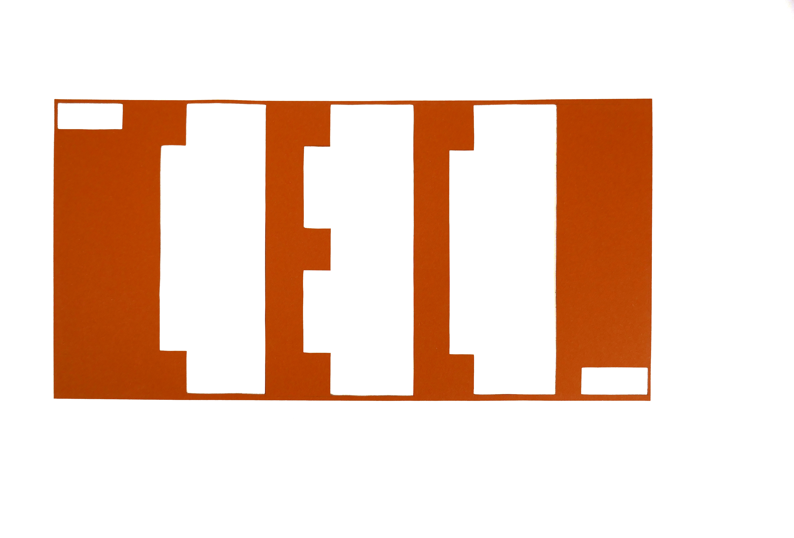
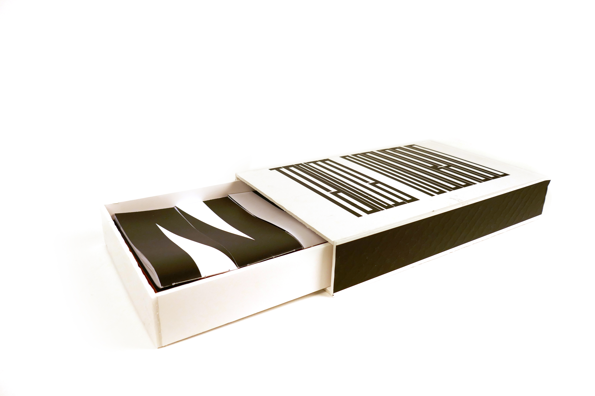
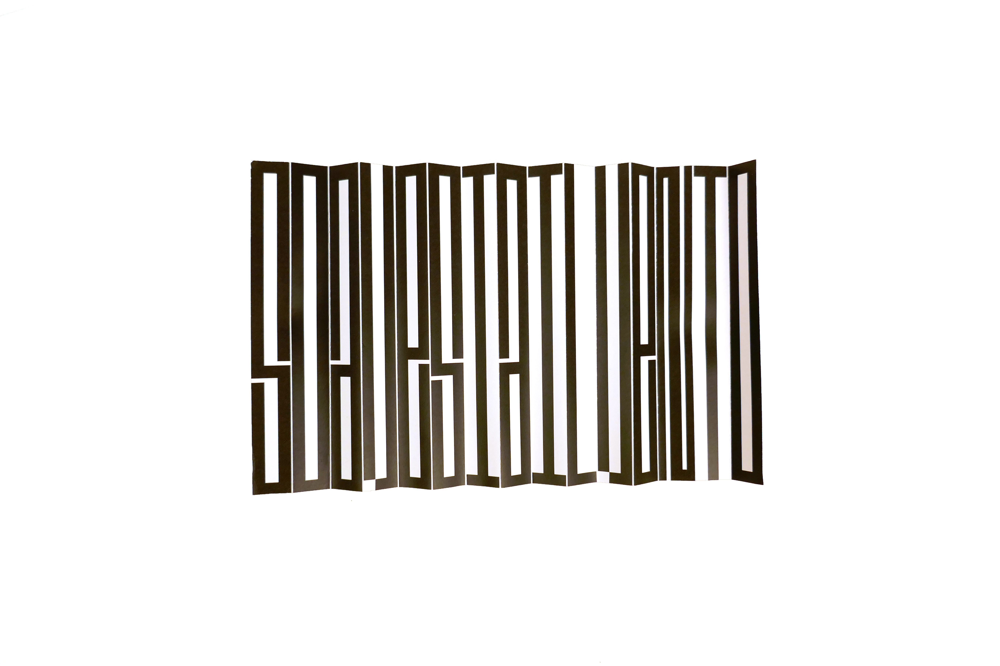
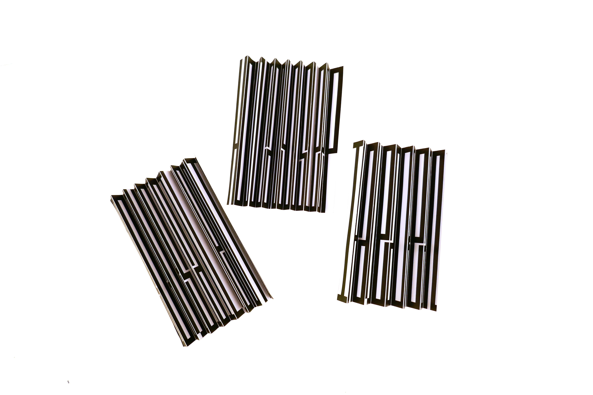
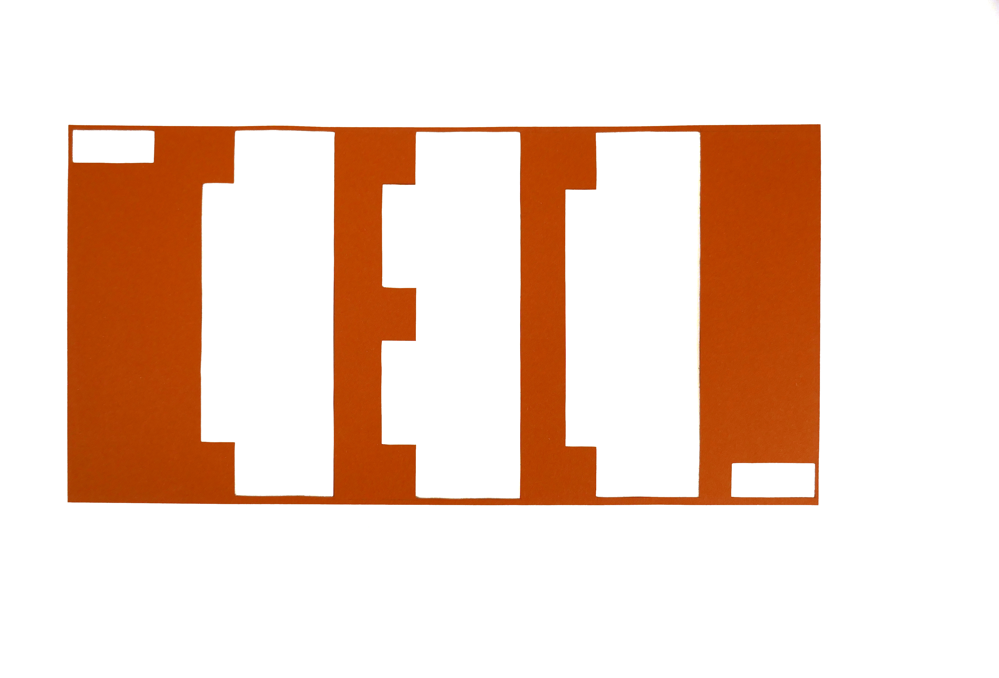
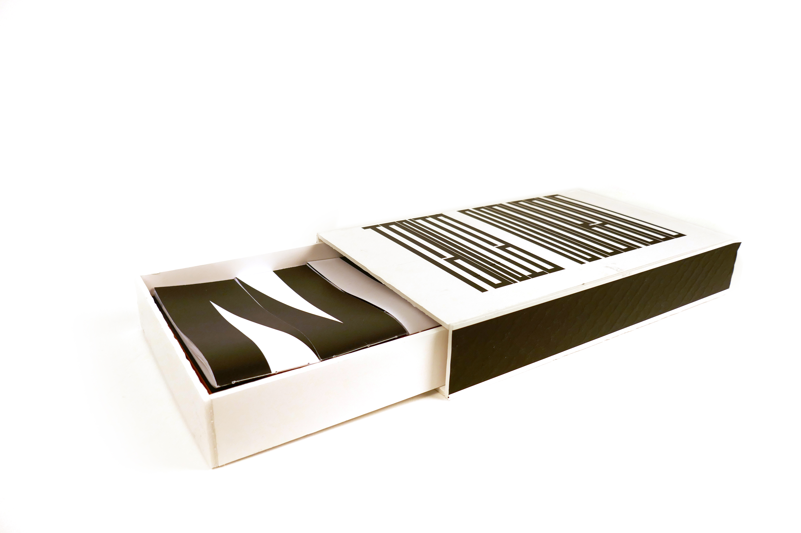
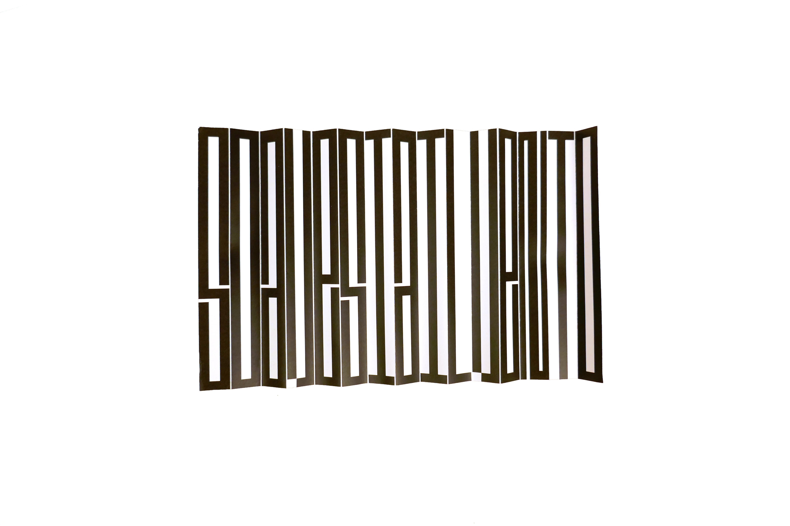
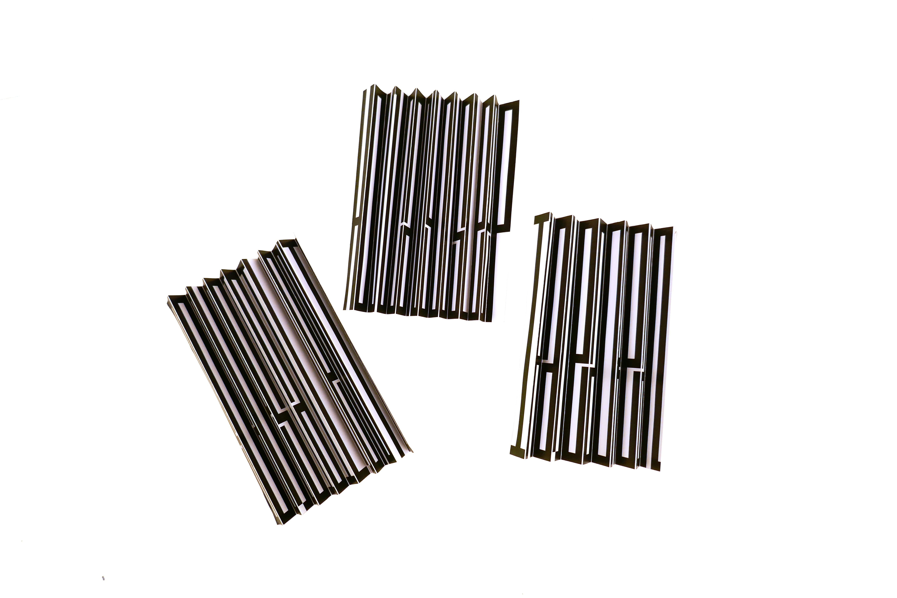
 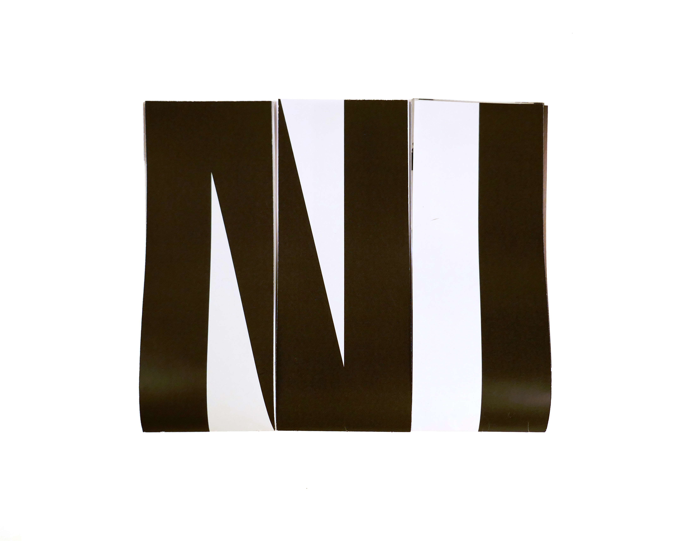
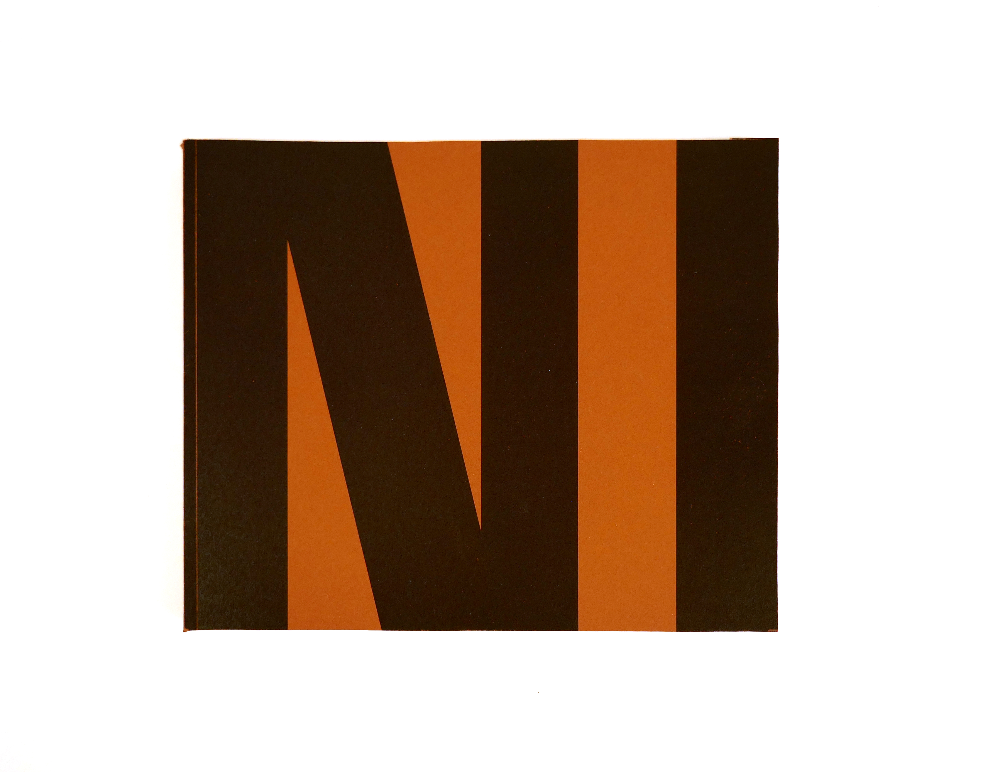
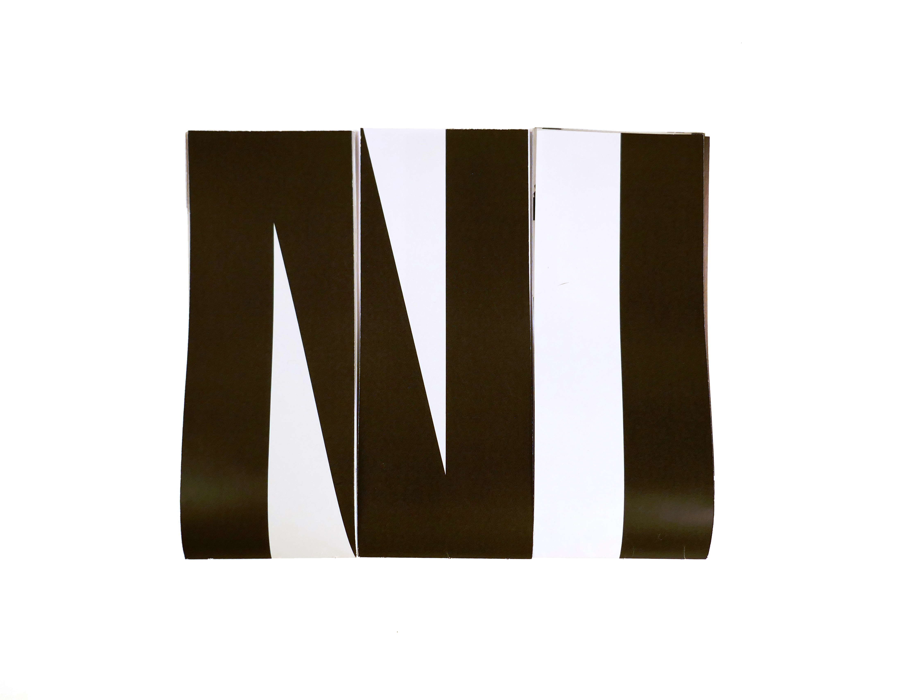
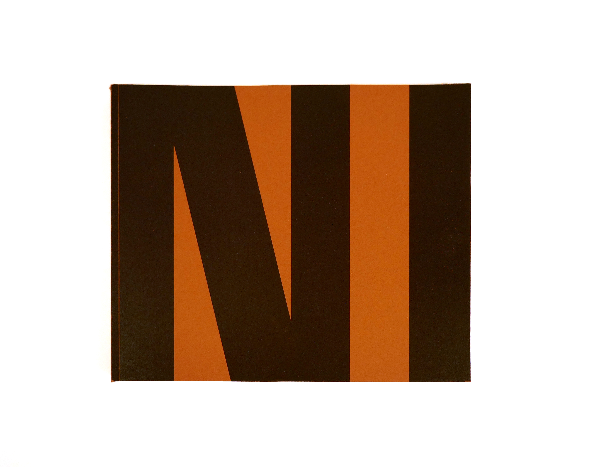